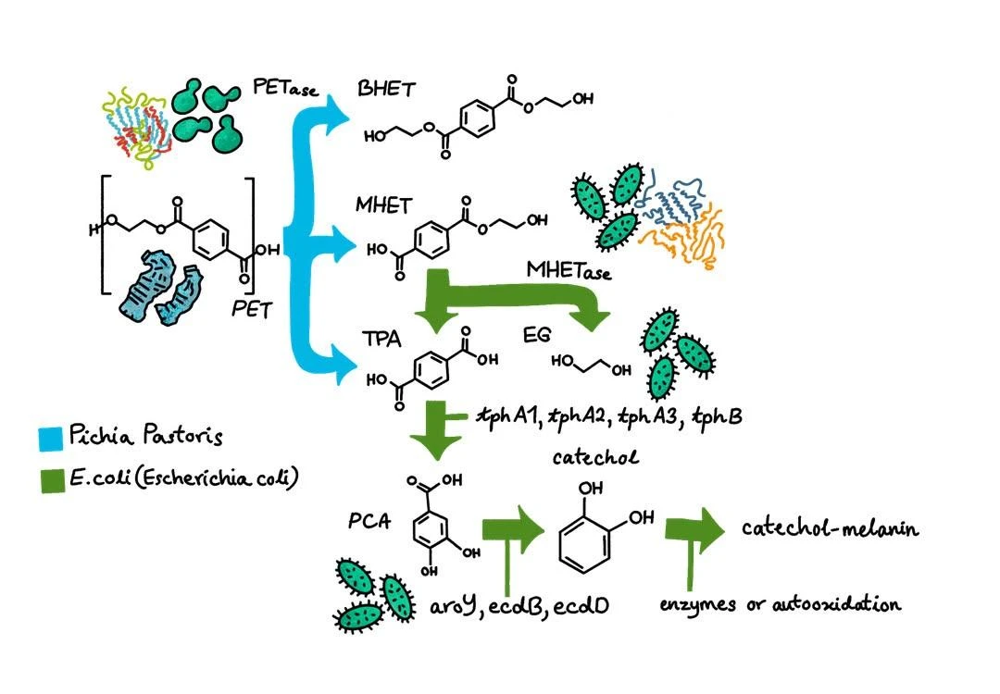

Abstract
Polyethylene terephthalate (PET) plastic is heavily utilized in global single-serve beverage packaging [1], resulting in an estimated 500 billion to 1 trillion plastic bottles consumed globally each year [2]. Because PET plastic takes up to 500 years to degrade, the vast majority of this non-biodegradable waste accumulates in landfills and marine environments [1, 2]. Concurrently, human populations are exposed to solar ultraviolet (UV) radiation, which is carcinogenic and a leading cause of skin cancers, cataracts, and cellular DNA damage [3]. Chemical sunscreens are widely used to reduce overexposure; however, active ingredients such as oxybenzone have been linked to skin irritation, contact dermatitis, and concerns about endocrine disruption [4, 5], as well as degradation of marine ecosystems through coral bleaching and toxic accumulation [4, 5]. We aim to bridge these dual challenges by converting post-consumer PET plastic waste into allomelanin, a biopolymer with potential for broad-spectrum UV protection.
Our Why

As young researchers living in Thailand, we witness the dual threats of extreme environmental degradation and significant health risks every day. Our country is at a critical crossroads: our bustling metropolitan centers and rivers are overrun with mismanaged plastic garbage, while our tropical position exposes millions of citizens and coastal ecosystems to constant, harsh ultraviolet radiation.
We concluded that the two distinct crises, plastic buildup and UV exposure, are inextricably linked. Our project was created not only as a laboratory experiment, but also as a response to our immediate surroundings, based on localized facts in Thailand.
Plastic Pollution in Thailand
Despite a reported 88.8% municipal waste collection rate, Thailand generates an estimated 428 kilotons of mismanaged plastic waste annually due to collection gaps and unsanitary disposal facilities [7]. While rural areas produce 70.1% of the waste exposed to environmental wash-off, extreme urban density makes Bangkok a critical leakage point [7]. Within Thailand’s high-priority river catchments, just 10 districts in and around Bangkok account for 51.7% of all exposed mismanaged plastic [7].
Massive volumes of this uncollected waste are dumped directly into waterways like the Chao Phraya River [7]. Once in the river system, 47.6% of this plastic flows into the ocean, resulting in an average marine discharge of 9.3 kilotons annually [7]. This figure surges to 14.3 kilotons during the rainy season, heavily contaminating vulnerable coastal ecosystems [7].
The UV Radiation in Thailand
Thailand endures severe year-round solar radiation, with the national UV index averaging 11 and 12 annually and surging to extreme levels between 13 and 14 across the country during the March hot season [8, 10]. Across major provinces like Bangkok and Phuket, a mere 15 to 20 minutes of midday exposure can trigger acute sunburn [10]. The World Health Organization classifies ultraviolet radiation as a carcinogen that damages cellular DNA and can affect the skin, eyes, and immune system [9]. Over time, chronic exposure leads to severe health conditions, including cataracts, premature skin aging, and skin cancers [9]. Because global health guidelines recommend sun protection at a UV index of 3 or above [9], Thailand’s extreme solar radiation levels make daily sun protection essential for millions of outdoor workers and residents.
 View full size
View full size
Under extreme UV levels, millions of residents and tourists across Thailand require daily sun protection, and society has relied heavily on synthetic chemical sunscreens. However, these contemporary sunscreens come with several hidden costs that may be detrimental to both humans and the environment.
Current Solutions
To shield human skin from UV radiation, commercial manufacturers rely heavily on synthetic UV filters like oxybenzone, octinoxate, and octocrylene [11, 12, 13, 14]. While effective at absorbing radiation, these chemical formulations raise health and environmental concerns.
Human Health Side Effects
Oxybenzone can penetrate the dermal barrier and has been associated with skin irritation and contact dermatitis; its potential endocrine effects are also under study [12, 14].
Marine Degradation & Aquatic Toxicity
Over 14,000 tons of sunscreen are estimated to wash into oceans annually, with some UV filters linked to coral bleaching, larval DNA damage, and toxicity in aquatic wildlife [11, 13, 14].
Strict Legal Enforcement
Thailand’s Department of National Parks has banned specified harmful UV filters across marine national parks, with fines of up to 100,000 THB [15].
While alternative mineral sunscreens, zinc oxide and titanium dioxide, have gained popularity, they can leave a chalky white cast on skin. Questions about the environmental effects of some nanoparticle formulations remain, and these alternatives do not address the plastic waste problem [11, 12].
Our Solution MELANIFY
To address the dual challenges of PET plastic pollution and harmful sunscreen runoff, we engineered MELANIFY, a circular synthetic biology platform designed to convert post-consumer plastic waste into allomelanin, a sustainable biopolymer with potential for broad-spectrum UV protection.
Before engineering an enzymatic pathway, we selected our target molecule based on its structural, photoprotective, and ecological properties [16, 17, 18, 19]. Unlike human skin pigments, eumelanin and pheomelanin, which require nitrogenous precursors like L-tyrosine, allomelanin is a class of nitrogen-free melanin synthesized from aromatic catechol compounds commonly produced by fungi and plants [18].
Broad-Spectrum Light Shielding
- Full-Spectrum Protection: Its densely conjugated aromatic matrix provides continuous light attenuation across the UVA, UVB, and UVC spectra [16, 17, 19].
- High Photostability: Absorbs solar radiation over extended periods without photodegrading or breaking down into hazardous fragments [16, 19].
Nitrogen-Free Chemical Backbone
- Bioconversion Alignment: Derived from catecholate precursors rather than nitrogenous amino acids like L-tyrosine [18].
- Circular Synthesis: Enables direct, low-cost biosynthesis downstream of PET monomer degradation (TPA → PCA → Catechol) [18].
Potent Antioxidant & ROS Scavenging
- Cellular Defense: Actively quenches damaging Reactive Oxygen Species (ROS) induced by UV exposure, preventing dermal oxidative stress and inflammation [16, 17, 19].
- Safe Quenching: Neutralizes free radicals without generating reactive secondary intermediates [16, 17].
Marine Biocompatibility & Coral Safety
- Zero Eco-Toxicity: Completely non-toxic to sensitive marine species, eliminating the bleaching and larval deformities caused by synthetic organic UV filters [16, 17, 18, 19].
- Rapid Biodegradation: Being a naturally occurring fungal/plant-type pigment, it breaks down harmlessly in coastal marine ecosystems [16, 18, 19].
Engineering Strategy: Dual-Host Division of Labor
Building a whole metabolic pathway from a complicated polymer, PET, to a polymerized pigment, allomelanin, within a single microbial host risks metabolic strain, cellular toxicity, and enzyme expression bottlenecks. MELANIFY uses a dual-host approach, splitting the metabolic load between two specialized chassis:
Pichia pastoris
High-density extracellular enzyme secretion breaks down solid PET outside the cell without requiring cell lysis.
Escherichia coli
Membrane-displayed enzymes and intracellular metabolic operons connect PET monomers to catechol production. The present design omits the TphC transporter, so substrate access requires lysate or permeabilised cells.
The 5-Step Enzymatic Cascade

View full sizeExplore the MELANIFY Pathway
PET plastic
A persistent polymer becomes the starting point for our proposed upcycling pathway. Engineered Pichia pastoris is used to produce and secrete HotPETase.
Explore this stageMHET
HotPETase begins PET degradation. Surface-displayed MHETase is intended to convert the resulting MHET into terephthalic acid.
Explore this stageTerephthalic acid
The tphA1, tphA2, tphA3 and tphB pathway is designed to convert recovered TPA into protocatechuate, connecting PET degradation with a downstream biological route.
Explore this stageProtocatechuate
PCA is the intermediate that connects the TPA pathway to catechol production. AroY performs the decarboxylation step with cofactor support from EcdB and EcdD.
Explore this stageCatechol
Catechol is the precursor for the final material. Oxidation and polymerization form the next stage of the proposed MELANIFY pathway.
Explore this stageAllomelanin
The pathway aims to produce catechol-melanin, or allomelanin. Its potential as a UV-shielding material is a research direction that requires further material and safety validation.
Explore this stageStarting Material: PET Plastic Waste
Input: post-consumer PET bottles and microplastics. Mechanical or thermal pre-treatment increases surface area and reduces crystallinity, preparing the polymer chains for biological cleavage. A persistent marine pollutant becomes an inexpensive, carbon-rich feedstock.
Secreted Enzymatic Cleavage: HotPETase
Host: Pichia pastoris. Engineered cells secrete thermostable HotPETase into the culture medium. The enzyme hydrolyzes ester bonds in insoluble PET into soluble MHET, alongside minor fractions of TPA and ethylene glycol.
Surface-Displayed Hydrolysis: MHETase
Host: E. coli. Surface-anchored MHETase cleaves MHET into terephthalic acid and ethylene glycol. Outer-membrane display avoids requiring MHET uptake into the cytoplasm and helps reduce intracellular metabolic burden.
Intracellular Conversion: TPA → PCA
Tools: tphA1, tphA2, tphA3, and tphB in E. coli. The dioxygenase system oxygenates TPA into a dihydrodiol intermediate, and TphB converts that intermediate to protocatechuic acid, PCA. The current device has no TphC transporter; lysate or permeabilised cells provide substrate access.
Decarboxylation to Precursor: PCA → Catechol
Tools: AroY, EcdB, and EcdD in E. coli. AroY catalyzes non-oxidative decarboxylation of PCA. EcdB supplies the prenylated flavin mononucleotide, prFMN, cofactor, and EcdD supports cofactor maturation and enzyme activity.
Polymerization & Final Yield: Catechol → Allomelanin
Reaction: cell-free oxidative biopolymerization. Open-air exposure, slightly basic pH, and trace CuSO₄ promote oxidation and polymerization of catechol into a nitrogen-free, cross-linked biopolymer matrix.
Ensuring a GMO-Free Final Product
Our final material is intended to be isolated as a cell-free biopolymer. Separation, purification, and validation are essential to confirming that engineered organisms do not remain in the product. Learn about our containment protocols →
Future Implications
Contributions to the Scientific Community
- Circular plastic upcycling: a synthetic biology pipeline connecting post-consumer PET with a high-value functional biopolymer.
- Dual-host engineering: a modular division of labor using P. pastoris for secretion and E. coli for membrane-bound and intracellular conversion.
- Enzymatic decarboxylation module: co-expression of AroY with EcdB and EcdD to explore conversion of pathway intermediates into catechol.
Strategic Avenues for Expansion
- Broadening plastic feedstocks: integrating additional degradation enzymes to process alternative polymer waste streams into aromatic precursors.
- Process scale-up: transitioning from batch bioconversion to optimized, scalable systems for cell-free allomelanin harvesting and production.
MELANIFY represents a commitment to protecting both human health and ocean ecosystems. By turning marine plastic pollution into sustainable photoprotection, we aim to bridge synthetic biology with environmental protection, moving toward a future where everyday sun care works in harmony with fragile marine life.
References
- National Institutes of Health Environmental Management System. Life cycle environmental impacts of PET plastic water bottles.
- Aquapet Plastik Geri Dönüşüm. PET bottle waste used globally in a year: Quantity and impacts.
- World Health Organization. (2022). Ultraviolet radiation.
- Smithsonian Ocean. The truth about corals and sunscreen.
- Patsnap Synapse. What are the side effects of oxybenzone?
- National Center for Biotechnology Information. (2023). Melanin biopolymers and photoprotection.
- World Bank. (2022). Plastic waste material flow analysis for Thailand: Summary report. Marine Plastics Series, East Asia and Pacific Region.
- Thai Meteorological Department. UV index. Ozone and Radiation Center.
- World Health Organization. (2022). Ultraviolet radiation.
- Sirithanabadeekul, P. (2019). Thailand’s UV index rating and the risk of sunburn. Samitivej Hospital.
- Smithsonian Ocean. The truth about corals and sunscreen.
- Patsnap Synapse. What are the side effects of oxybenzone?
- National Center for Biotechnology Information. (2018). Toxicological effects of organic UV filters on marine ecosystems.
- National Center for Biotechnology Information. (2020). Occurrence, bioaccumulation, and environmental risks of sunscreen active ingredients.
- Department of National Parks, Wildlife and Plant Conservation. Notification on sunscreen chemical restrictions in national parks.
- National Center for Biotechnology Information. (2023). Melanin biopolymers in pharmacology and medicine—Skin pigmentation disorders, implications for drug action, adverse effects and therapy.
- National Center for Biotechnology Information. (2024). Melanin for photoprotection and hair coloration in the emerging era of nanocosmetics.
- National Center for Biotechnology Information. (2025). Exploring allomelanin: A comparative analysis via natural product extraction and synthesis.
- National Center for Biotechnology Information. (2022). Fungal melanin as a biocompatible broad-spectrum sunscreen with high antioxidant activity.